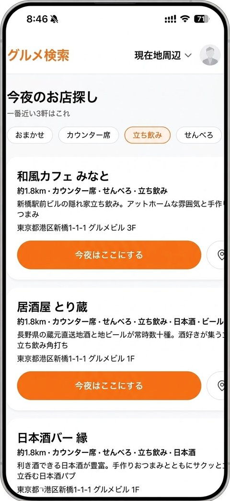
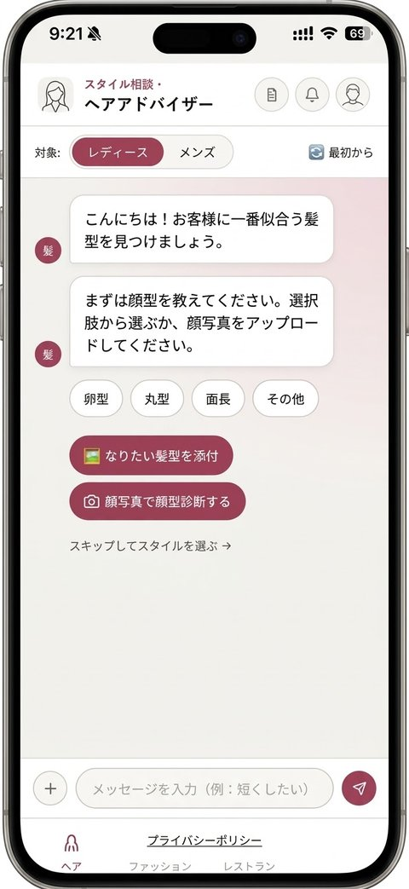
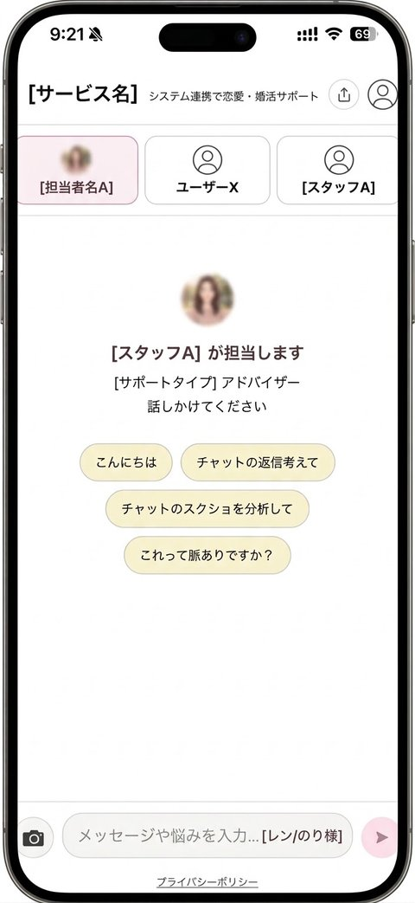

MIRAI-Dev-Solo
ソロ飲みナビ
稼働中
一人で入りやすい店だけを集め、現在地から近い順に3軒を提案します。
位置情報は手動指定・GPS・IP推定・既定値の順にフォールバックし、
GPSを拒否しても使えます。チェックインの記録と、一人でも遊べる
ゲームを5種類用意しています。
デモを開く →

- Stack
- Next.js 14 + Prisma
- DB
- PostgreSQL (Neon / sin1)
- API
- Google Maps / Geocoding / Places
- 運用
- Vercel Cron で月1回の閉店確認
MIRAI-Dev-Beauty
ヘア・ファッション診断
稼働中
写真をアップロードすると、顔型に似合う髪型、コーディネートの
チェック、デート向けの店の提案までをAIが返します。美容師や
スタイリストに相談する前の「予習」として使う想定です。
デモを開く →

- Stack
- 静的HTML + Vercel Functions
- API
- 診断用エンドポイント5本
- 特徴
- APIキーはサーバー側のみ。未接続時はモックへ自動切替
- 画像
- 診断のため一時送信のみ・保存なし
MIRAI-Dev-Chat
コミュニケーション相談
稼働中
やり取りのスクリーンショットを送ると、AIが状況を読み取って返信の
文面を提案します。文章の添削だけでなく、送る頻度やタイミングまで
含めて助言する設計です。タイプの異なる3人のアドバイザーを選べます。
デモを開く →

- Stack
- Next.js 14 (App Router)
- AI
- gemini-2.5-flash
- 特徴
- 人格3種をオブジェクト1個で管理し、追加は設定のみ
- データ
- 入力内容はサーバーに保存しない